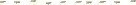

2015/0322Sun♯67個目 焼肉か鉄 板焼きか。
こんばんわんこ！
伊藤純奈です

「命は美しい」発売しました！
Type-Cには研究生pv、
通常盤には「ボーダー」が
収録してあります。
まず、研究生pvのお話から！
監督さんは伊藤衆人さんでお世話に
なるのは今回で3回目です(^｡^)
相変わらず面白くてお話してて
楽しいです！
6人のpvだけどなんとなく2人ずつ
ペアになっていて純はみり愛とペア！
お揃いの洋服にそれぞれ武器を
持って撮影！pvの中でも現実でも
姉妹のようでした.....。
お揃いの服着て車でも隣に座って
寝るタイミングまで一緒だった♡笑
pvの中でも基本2人でわちゃわちゃ
してるので注目してみてください
面白いpvになってると思うので
ぜひ見て頂きたいです♪
そして、通常盤には
琴子、絢音、蘭世、れな、みり愛
純奈の6人での楽曲「ボーダー」が
収録されています！1人1人の歌声が
しっかりと聞けると思うので、
ぜひ聞いてみてください♪♪
全握@京都ありがとうございました！
今回は七瀬さんとペアでした(^｡^)
七瀬さん推しの方ありがとう
ございました！！楽しかった♡
そして、ボーダー初披露でした〜
緊張したけど楽しかった(((o(*ﾟ▽ﾟ*)o)))
次もがんばります！！
チェキ会来て下さったみなさん
ありがとうございました！
楽しかったー(((o(*ﾟ▽ﾟ*)o)))
また機会があればやりたいなぁ...

今日のこんぺいとーく
☆オムライスには何かける？
→ デミグラ
☆1番妹って感じのメンバーは誰？
→ みりあかな。いや、あやねかな。
☆リラックス方法は？
→ 友達に会う。メンバーに会う。
いっぱい寝る。
今日はここまで！
〈最近の出来事〉
・かりんとディズニーシーに行く。
楽しかった！また行きたいな〜
・日奈子蘭世と
「ウィズ〜オズの魔法使い〜」を観にいく。
田野優花さんかっこよかった♡
もっと色んな舞台を観に行きたいなぁ
みり愛と怜奈に遊ばれる純奈
おやすみなさい！
2015/03/22 23:26
コメント(383)
純奈！！！
純奈！！！
じゅんなー
ボーダー聞きまくる！！！
はやく握手行きたい！
じゅんな可愛いすぎ！
ミニライブお疲れ様！
4/5の握手会楽しみにしてる(^^)
ミニライブお疲れ様！
4/5の握手会楽しみにしてる(^^)
純奈
焼き肉だぜ
ディズニーいいな！！
行きたいな笑
これからも純奈応援します！！
行きたいな笑
これからも純奈応援します！！
じゅんなー(^O^)／
初コメだよー(^O^)／
のろこーって言います。
よろしくね(￣▽￣)
初コメだよー(^O^)／
のろこーって言います。
よろしくね(￣▽￣)
全握おつかれさま！！
はじめてじゅんなと握手してびっくりした！！
可愛すぎて！！
今度個別いきます！！
出っ歯が特徴的なやつです！！笑
はじめてじゅんなと握手してびっくりした！！
可愛すぎて！！
今度個別いきます！！
出っ歯が特徴的なやつです！！笑
じゅんなー！
純奈！！！！
またコメントするね
またコメントするね
ボーダーいいね！！
よぉ。純奈。
早く純奈と握手したいぜ。
最近あっつんの影響ハマってしまったよ！！
早く純奈と握手したいぜ。
最近あっつんの影響ハマってしまったよ！！
じゅんなこんばんわんこヾ(＠⌒ー⌒＠)ノ
じゅんなチェキ会いったよーヾ(＠⌒ー⌒＠)ノ
じゅんな可愛すぎて緊張がやばかったヾ(＠⌒ー⌒＠)ノ
ペアPVみたよーヾ(＠⌒ー⌒＠)ノテキトーじゅんなうけたヾ(＠⌒ー⌒＠)ノ
ボーダーはやくみたいーヾ(＠⌒ー⌒＠)ノ
二期生ふざけあってるのほのぼのヾ(＠⌒ー⌒＠)ノ
じゅんなチェキ会いったよーヾ(＠⌒ー⌒＠)ノ
じゅんな可愛すぎて緊張がやばかったヾ(＠⌒ー⌒＠)ノ
ペアPVみたよーヾ(＠⌒ー⌒＠)ノテキトーじゅんなうけたヾ(＠⌒ー⌒＠)ノ
ボーダーはやくみたいーヾ(＠⌒ー⌒＠)ノ
二期生ふざけあってるのほのぼのヾ(＠⌒ー⌒＠)ノ
おはよー
けーすけです
チェキ会たのしかたねーうんうん
真顔のチェキはなかなかだったわ
またあるといーねー
それと明日から北海道に一人旅！
生きて帰ってこれたらまた握手いくかも！
じゃねー
けーすけ
けーすけです
チェキ会たのしかたねーうんうん
真顔のチェキはなかなかだったわ
またあるといーねー
それと明日から北海道に一人旅！
生きて帰ってこれたらまた握手いくかも！
じゃねー
けーすけ
この前の「ウィズ〜オズの魔法使い〜」で会いました！すごく可愛いかったです♡今後も応援してます！！
のぎむ〜です！笑
みずきが本名なんだ！！笑
755もみずきに変えたんだけど気づいてくれたかな？
把握お願いいたします☺
写真盛りだくさんだね〜かわいいっす(๑°⌓°๑)
みずきが本名なんだ！！笑
755もみずきに変えたんだけど気づいてくれたかな？
把握お願いいたします☺
写真盛りだくさんだね〜かわいいっす(๑°⌓°๑)
まだ元研究生6人のPVみれてないから早くみたいなぁ〜♡♡
ボーダー早く披露してるところみたいなぁ〜！！！
みりあとれなちに遊ばれる純奈も可愛い♡♡
ボーダー早く披露してるところみたいなぁ〜！！！
みりあとれなちに遊ばれる純奈も可愛い♡♡
755で、「今回の京都全握のペア最高だけど、横浜じゃ変わっちゃうんですか？」ってきいた、「はる」です！
返信くれてありがとう！！！
横浜はなぁちゃんとじゅんなちゃんに会いたかったけど、ペア変わっちゃうなら会えないや(泣)いつかまたこのペアまってます！楽しみにしてます！
ではではー！
返信くれてありがとう！！！
横浜はなぁちゃんとじゅんなちゃんに会いたかったけど、ペア変わっちゃうなら会えないや(泣)いつかまたこのペアまってます！楽しみにしてます！
ではではー！
よぉ。
前髪長い方が可愛いなやっぱ
ボーダー毎日聞いてるよ！
前髪長い方が可愛いなやっぱ
ボーダー毎日聞いてるよ！
ずんずんずんなたん♡♡
4月5日会えるよ〜〜〜〜嬉しい！
シーいいな！このまえディズニー
いってから超はまってんだけど（笑）
じゅんなちゃんといきたーいー！！！！
次に会うのひさびさやし忘れられてると
思うけど覚えてもらうよう頑張る！！！！！
じゅんなちゃんのサバサバしたところすきよ！
なんか似てるんよ自分と（笑）（笑）
こんぺいとーく♡♡
むくみ防止とかなんかしてる？？
4月5日会えるよ〜〜〜〜嬉しい！
シーいいな！このまえディズニー
いってから超はまってんだけど（笑）
じゅんなちゃんといきたーいー！！！！
次に会うのひさびさやし忘れられてると
思うけど覚えてもらうよう頑張る！！！！！
じゅんなちゃんのサバサバしたところすきよ！
なんか似てるんよ自分と（笑）（笑）
こんぺいとーく♡♡
むくみ防止とかなんかしてる？？
いつも楽しそうでなによりです！
ボーダーすごいいい歌！
いつも聴いてるよー！
純奈の声大好きだ！
これからもがんばろーー！
ボーダーすごいいい歌！
いつも聴いてるよー！
純奈の声大好きだ！
これからもがんばろーー！
ごっき〜
琴子の写メありがとう ヾ(*´∀｀*)ノ
ボーダーいい曲やね(^-^)
自分の誕生日に純奈ポスター拝んできたよー(^^)/
早く部活引退して握手会行きたいなー(∩´﹏`∩)
早く部活引退して握手会行きたいなー(∩´﹏`∩)
純奈かわいいよ、パシフィコ横浜の全国握手会絶対に行くから待っててね〜( ^ω^ )
ブログまってたよ〜
おつぺろ！
おやすみー！なーちゃんとの全握行きたかった！でも、横浜の全握は純奈中心やー！
こんばんわんこ 純奈ちゃん
ボーダー聴いたよ〜〜
ボーダー聴いたよ〜〜
じゅんなちゃん歌うまくて好きになった꒰ ♡´∀`♡ ꒱
早くPV見たいいいいい
お金無くて初回買えてないのです
早く買ってボーダー聴いたり、PV見たりしたいなぁ
お金無くて初回買えてないのです
早く買ってボーダー聴いたり、PV見たりしたいなぁ
じゅんちゃん！
ブログ更新ありがとう！
そして、昨日！
京都全握！ほんまにありがとうございました！！
なのって言ったときにわかってくれたのが
すごくすごくすごーーーく幸せでしたっ♡
じゅんちゃんのこともっと好きになったし、
楽しすぎたし、
めっちゃくちゃ元気もらえましたっ！
木曜日まで学校あるし、
課題もめっちゃくちゃあるし、
がんばらなあかんことだらけやけど、
昨日の握手会でもらったパワーで頑張る！
ぁ、来週の土曜日、3月28日！
2期生のオーディションの日やんな？
その日は、なのの誕生日です♪
やーっと16歳になる！同い年！
755でまた言うからお祝いしてほしい…♡
ではでは、
またコメントします！
おやすみ〜♡
ブログ更新ありがとう！
そして、昨日！
京都全握！ほんまにありがとうございました！！
なのって言ったときにわかってくれたのが
すごくすごくすごーーーく幸せでしたっ♡
じゅんちゃんのこともっと好きになったし、
楽しすぎたし、
めっちゃくちゃ元気もらえましたっ！
木曜日まで学校あるし、
課題もめっちゃくちゃあるし、
がんばらなあかんことだらけやけど、
昨日の握手会でもらったパワーで頑張る！
ぁ、来週の土曜日、3月28日！
2期生のオーディションの日やんな？
その日は、なのの誕生日です♪
やーっと16歳になる！同い年！
755でまた言うからお祝いしてほしい…♡
ではでは、
またコメントします！
おやすみ〜♡
純♪おやすみ‼
握手会いきました！！！
生で見たら100倍可愛くててんぱって、「昇格」って言葉しばらく出てこーへんかったのに優しく微笑んでくれてほんま天使でした！
ほんまにありがとう\( ˆoˆ )/
生で見たら100倍可愛くててんぱって、「昇格」って言葉しばらく出てこーへんかったのに優しく微笑んでくれてほんま天使でした！
ほんまにありがとう\( ˆoˆ )/
みり愛とれなちに遊ばれてる写真 見てると和む（笑）
握手会とかチェキ会行けなくてごめんなさいm(_ _)m
部活が忙しくて…
部活なんかやめてやる！（笑）
でもサッカー楽しいからやめないかもw
握手会とかチェキ会行けなくてごめんなさいm(_ _)m
部活が忙しくて…
部活なんかやめてやる！（笑）
でもサッカー楽しいからやめないかもw
あーディズニー行きたい！！(笑)
乃木どこ見てたらユニバにも行きたくなってきた
剣がはやってますね(∂ω∂)
人ごみが苦手ですが、いつか純奈さんの握手行ってみたいです٩( 'ω' )و
人ごみが苦手ですが、いつか純奈さんの握手行ってみたいです٩( 'ω' )و
純奈かわいいね！
応援してるよ！
応援してるよ！
ボーダーみたかった…
アンダラで見たいなー
アンダラで見たいなー
じゅんにゃ〜♡
ボーダー聴いたよっପ(⑅ˊᵕˋ⑅)ଓいい歌♩
私じゅんにゃの声すきだなぁ♡
早く握手したい！
6/14はよろしくね♡
最近755でお返事が来なくて寂しいよ(´._.｀)笑
読んでくれてたらそれだけで嬉しいんだけどね♡！
じゅんにゃかわいい！すき！らぶ♡ まひめろ
ボーダー聴いたよっପ(⑅ˊᵕˋ⑅)ଓいい歌♩
私じゅんにゃの声すきだなぁ♡
早く握手したい！
6/14はよろしくね♡
最近755でお返事が来なくて寂しいよ(´._.｀)笑
読んでくれてたらそれだけで嬉しいんだけどね♡！
じゅんにゃかわいい！すき！らぶ♡ まひめろ
じゅんなちゃーん♡♡
すき♡♡
ブログ更新ありがとうo(^▽^)o
すき♡♡
ブログ更新ありがとうo(^▽^)o
こんばんわんこそば♪
焼肉！( ´ ▽ ` )ﾉ
焼肉！( ´ ▽ ` )ﾉ
純奈〜！！
初めて乃木坂さんの公式ブログにコメントしました！！
これからもずっと応援しているので頑張ってください(๑´ڡ`๑)
このコメントを見てこれからの活躍の力になれたら嬉しいですぅぅぅ！！
これからもずっと応援しているので頑張ってください(๑´ڡ`๑)
このコメントを見てこれからの活躍の力になれたら嬉しいですぅぅぅ！！
じゅんな！！
京都の全握お疲れ様でした！！
楽しめましたか？
ボーダー、755でみんな言ってたけれどほんまに良い曲ですね！！
今度は絶対にじゅんなに会いに行きます！！
よろしくお願いいたします！！
京都の全握お疲れ様でした！！
楽しめましたか？
ボーダー、755でみんな言ってたけれどほんまに良い曲ですね！！
今度は絶対にじゅんなに会いに行きます！！
よろしくお願いいたします！！
ボーダーほんといいね
みり愛と純奈の組み合わせ好きすぎるわ！！
全握お疲れ様〜
なぁちゃんと純奈とか最高すぎるね
横浜のやつ学校なかったら行くね
チェキ会もお疲れ様！
純奈みたいな可愛い子とチェキ撮れるとか夢〜
ゆっくり休んでね〜
みり愛と純奈の組み合わせ好きすぎるわ！！
全握お疲れ様〜
なぁちゃんと純奈とか最高すぎるね
横浜のやつ学校なかったら行くね
チェキ会もお疲れ様！
純奈みたいな可愛い子とチェキ撮れるとか夢〜
ゆっくり休んでね〜


焼肉いったく